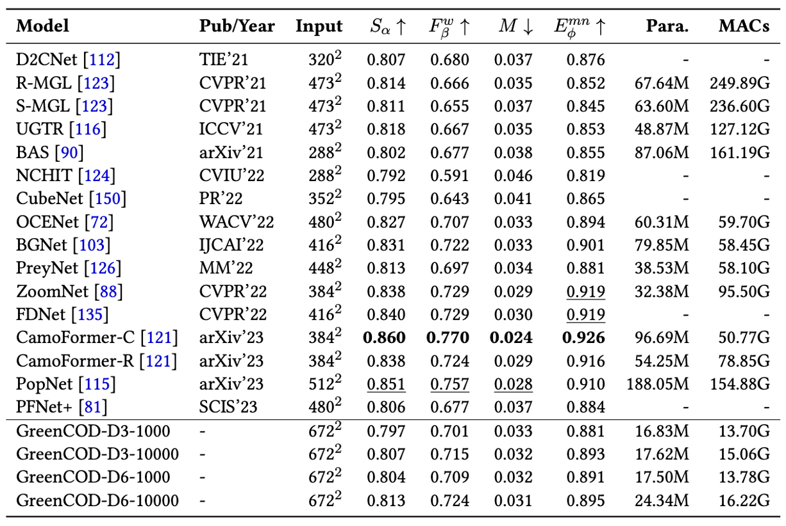

GreenCOD: Green Camouflaged Object DetectionHong-Shuo Chen1 Yao Zhu1 Suya You2 C.-C. Jay Kuo11 University of Southern California 2 DEVCOM Army Research LaboratorContact us: hongshuo@usc.edu |
|
Abstract
A Gradient Boosting Based Camouflaged Object Detection method without back propagation, called GreenCOD is proposed in this work. GreenCOD is developed based on extreme gradient boosting (XGBoost) with deep features extracted from Deep Neural Network (DNN). Nowadays, researcher designed complex architectures of deep neural networks to improve the performance of Camouflaged Object Detection and fine-tuned the model by back propagation. However, those methods are usually computation extensive and with minor differences across different models. In the work, we designed a new paradigm by using gradient boosting to conduct the image segmentation. With simple design of the model, our model use less data, less parameters and less FLOPs comparing to different state-of-the-art deep learning models while keep the high performance. The models is trained without any back propagation and it increases 4x data efficiency, reduce 50% of the model parameters and only used 10\% of the FLOPs. This new paradigm without back propagation is green and have more opportunities to explore.
GreenCOD
Experimental Results
|  |
Downloads
| Paper | : [ arXiv Version ] |
| Experimental results | : [ Results.zip ] |
| Pre-trained model | : [ PFNet.pth ] |
| Source code | : [ Code ] |
| COD10K training set | : [ Google Drive ] |
| COD10K testing set | : [ Google Drive ] |
BibTex